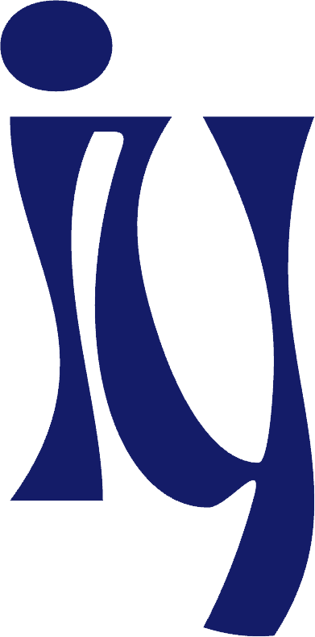
I design and build tech products, using my background in business and computer science to create meaningful and impactful solutions.
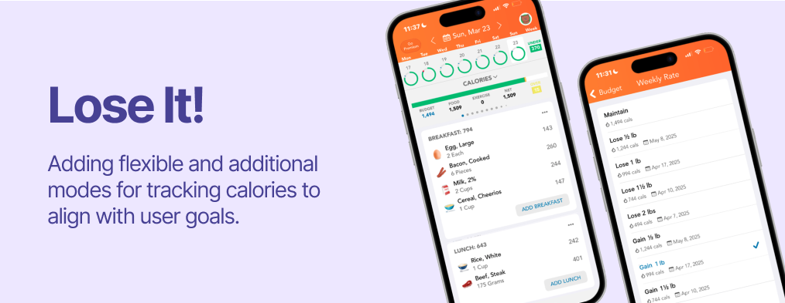
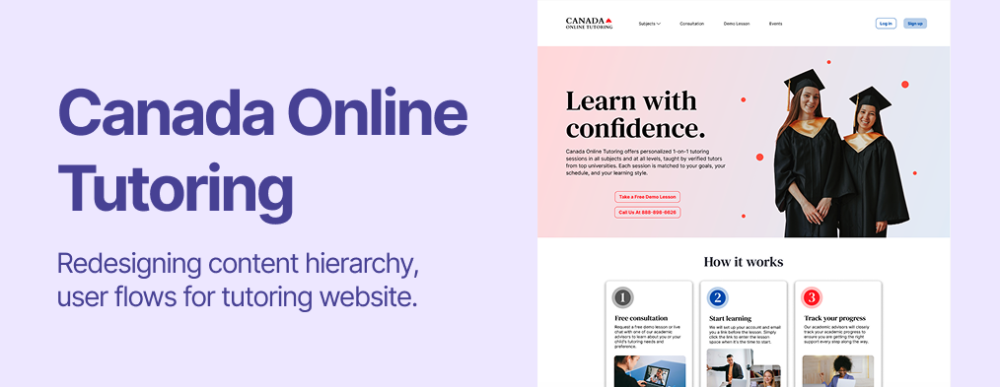
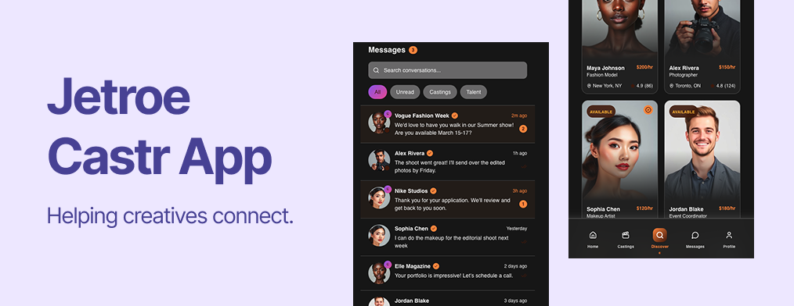
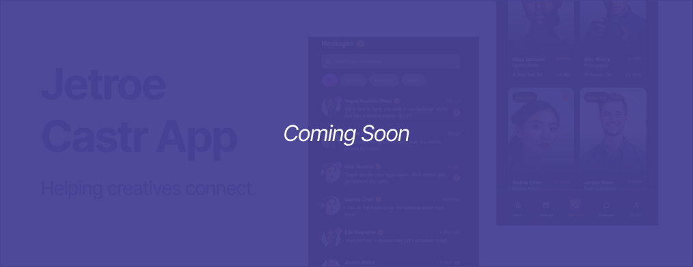
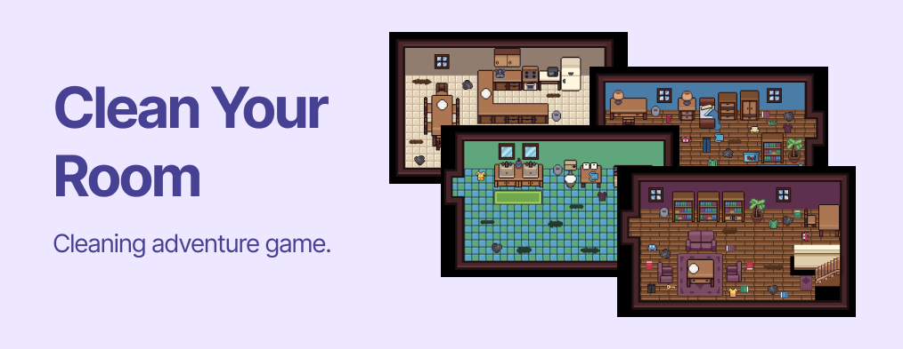
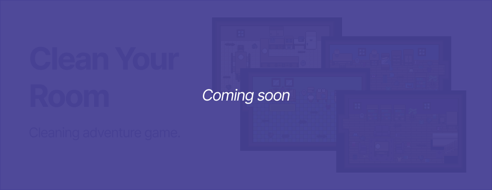
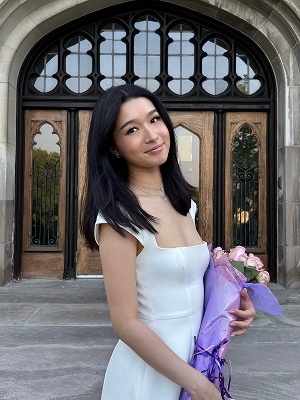
I am a business and computer science student who loves all things design and tech.
I graduated with an HBA from Ivey Business School in 2025 and am on my way to completing my BSc in Computer Science at Western University. I have worked as an accountant at BDO Canada and as a finance product analyst at IRCC, where I gained valuable skills in data analysis and translating business needs into requirements for developers. While I enjoyed working in both roles, I found myself looking for something more creative. Now, I am starting my journey into UX and product design!
I was born and raised in Ottawa, Ontario surrounded by national parks and ski hills, and spent much of my childhood outdoors. I also love baking, woodworking, fashion, blueprinting, hiking, running, and tennis.
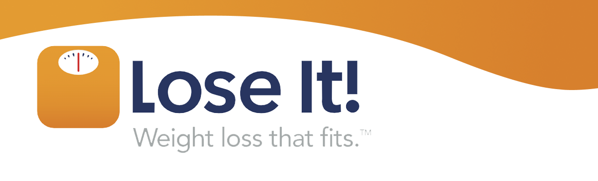
Product management case study
Lose It! is a calorie tracking app whose mission is to mobilize the world to achieve a health weight. They serve over 50 million users, including 3.4 million monthly active users through a freemium model.
I interviewed both current and past users of Lose It! and found that most users have either:
This finding is reflected in the numbers.
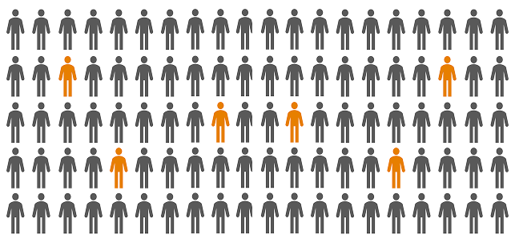
However, both current and past users still have positive feeling towards Lose It!. Instead, they are leaving because they feel like they've already learned all they need to know about calorie or they felt like they had outgrown the app and that Lose It! no longer aligns with their goals.
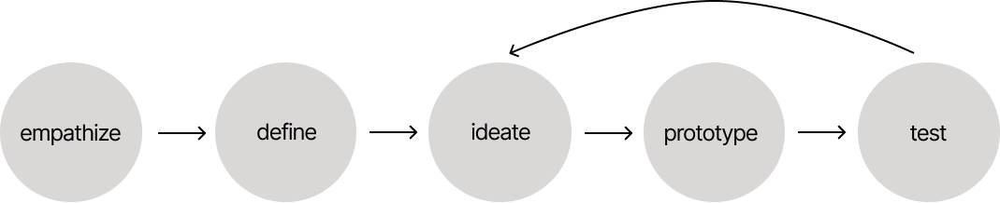
"I stopped using Lose It! because I don't want to lose it, I want to gain it!"
"When the calorie count goes red, even if I'm only a few calories over, I feel like I failed that day...it makes me want to stop tracking altogether."
"I only use the food logging and calorie tracking features...I don't feel the need to use any other feature."
For some users, achieving their idea of a healthy weight requires them to gain weight. However, Lose It! doesn't have the gaining option when choosing a daily calorie intake goal. These users now seek alternatives to Lose It! as they feel like they have outgrown the app and their goals have evolved, but Lose It! hasn't grown with them.
Multiple users also reported feeling demotivated after seeing the calorie bar turn red, even when they were only slightly over their limit. This often led them to stop tracking or quit the app altogether, making it less likely they would reach their goals and further discouraging them from continuing.
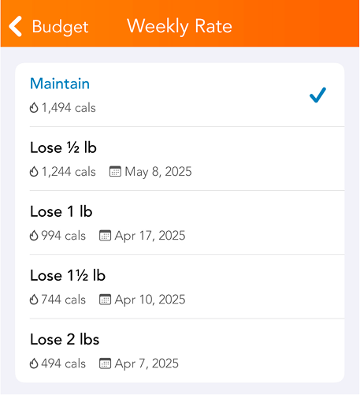
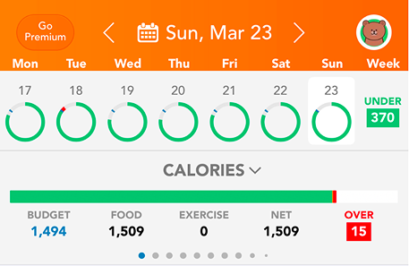
Users aren't downloading Lose It! just to track calories—they want to achieve their weight goals to feel healthier, look better, increase energy, and so on. Every user also has their own vision of what a healthy weight looks like but Lose It! isn't addressing them all.
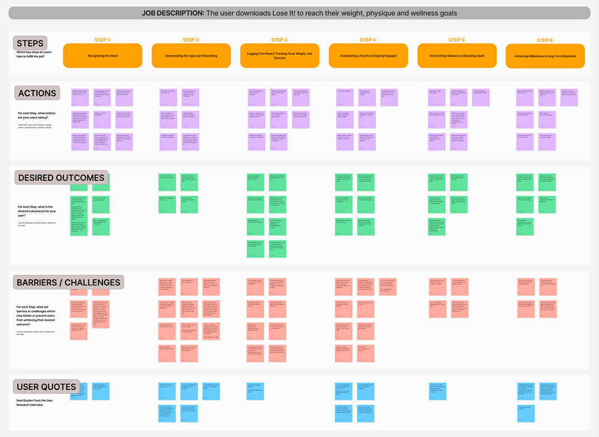
There is a product opportunity to better align with a wider range of user goals and user behavioural design to keep users engaged and motivated throughout their calorie-tracking journey.
After talking to users, I noticed a pattern. People start out motivated, but struggle to stick with tracking over time. Most apps do the basics well, but they can feel rigid. Even going slightly over a goal can feel discouraging, which makes it easier to fall off completely. What users want is something that keeps them accountable but feels more flexible and less punishing.
Thus, the tasks "track calories to bulk" and "track calories flexibly" were chosen.
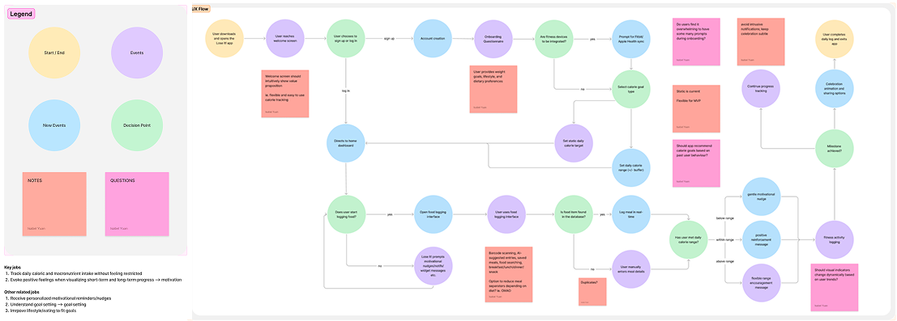
Your goals are evolving—and so is Lose It!, with flexible and additional ways to track calories that better align with your needs.
Calorie tracking mode for users who are trying to gain weight.
Users can set a buffer zone (up to +50 calories when cutting or -50 when bulking) where going over/under but within the range turns the daily calorie count yellow instead of red.
Decluttered onboarding process with questions that identify user needs and goals for Lose It! to address.
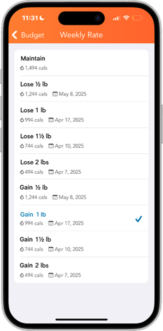
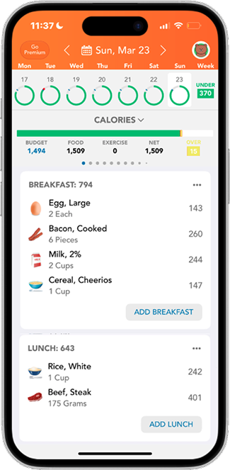
Given the scope of this project, I kept the wireframes and visual design consistent with the existing product. Although I simplified the onboarding process, I would push this further next time by reducing the number of steps users need to complete sign-up.
This project showed me the importance of user interviews, from preparing an extensive question bank to asking without leading users to a specific answer. Mapping the user journey also helped me better understand where users disengage and how design and behavioural economics can better support long-term retention.
Canada Online Tutoring is a Toronto-based education company that provides one-on-one online tutoring for students across Canada, from elementary through university levels. They match students with experienced tutors aligned with the Canadian curriculum to support homework, exam preparation, and long-term academic success.
Below is a comparison of the current website and the redesigned version. The redesign keeps the existing visual identity, while improving clarity and overall usability. Other key changes include a new events page, a new subject page, a new tutor profile page, and improved registration page architecture.
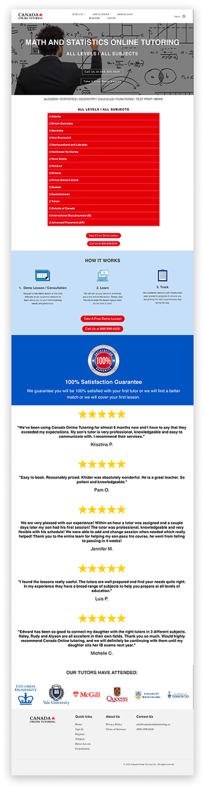
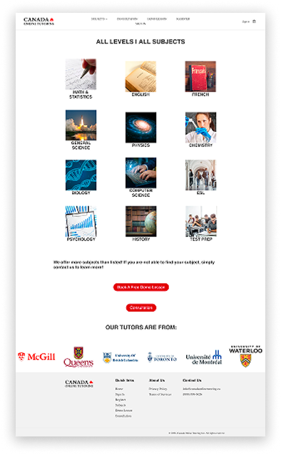
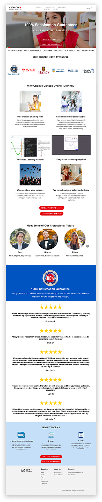
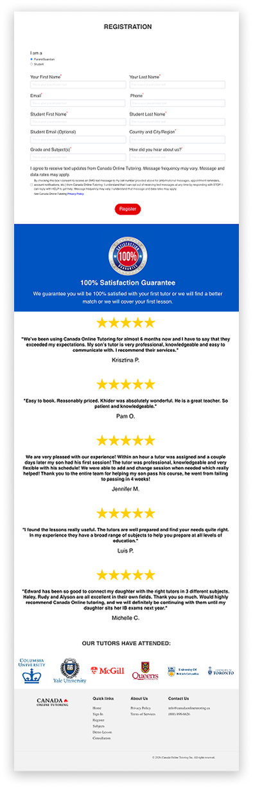
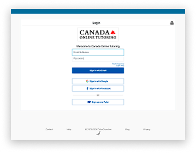
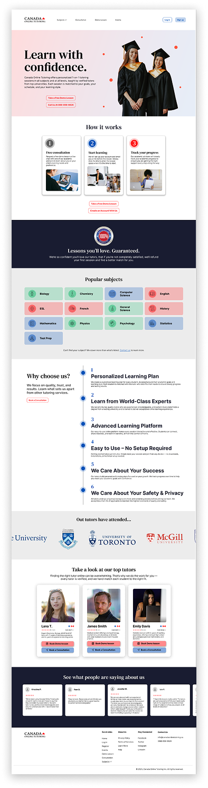
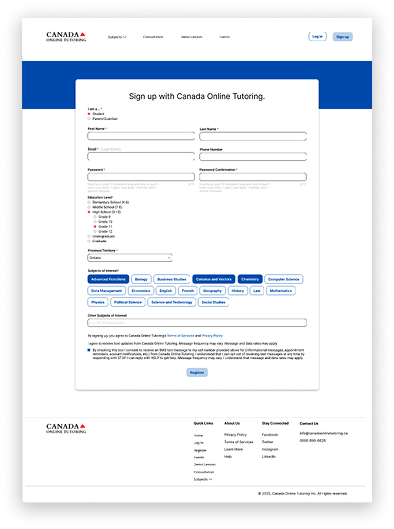
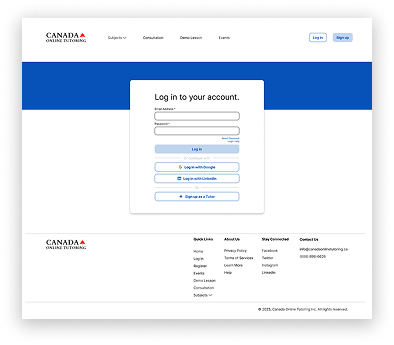
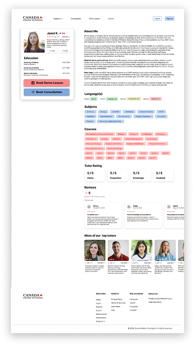
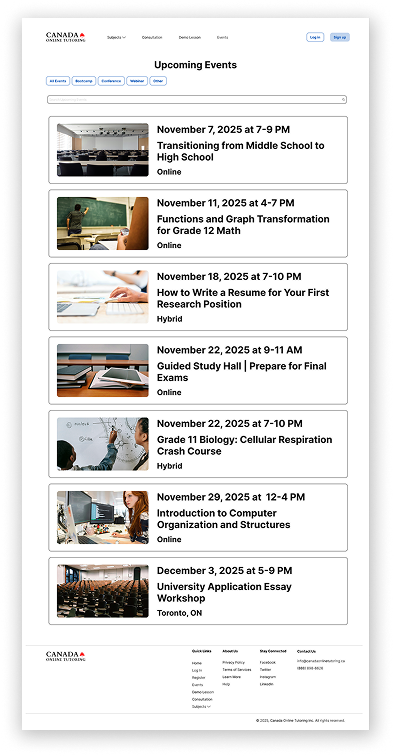
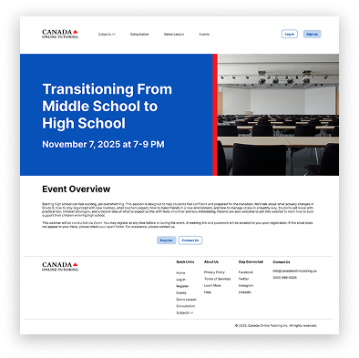
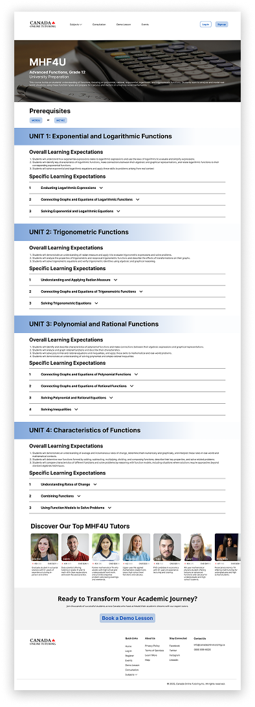
Through this project, I learned more about how information hierarchy and visual brand messaging can shape a user's first impression and directly affect conversion. I gained experience designing a website with both user needs and business goals in mind by improving both clarity and conversion.